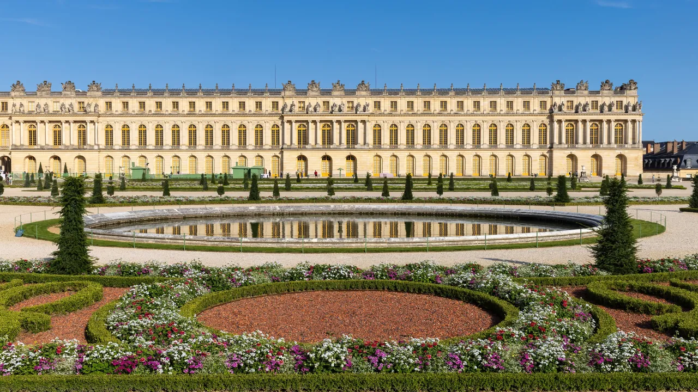
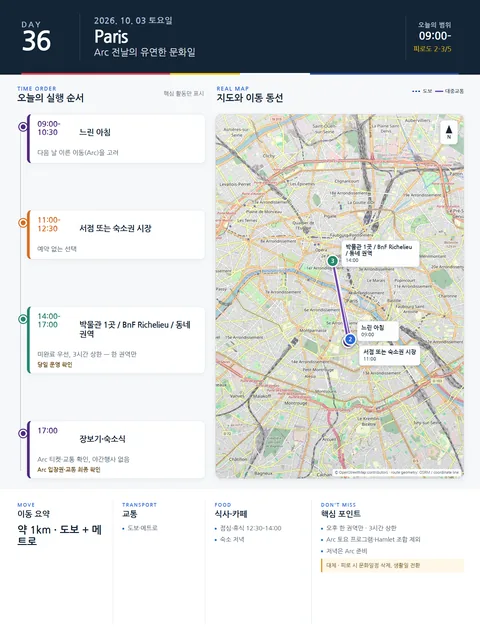

Day 36 · 10/3 토 · Paris

오늘의 주요 장소


- 핵심 실행
- 유연한 문화일 (박물관/BnF/동네)
- 권장 출발
- 느린 아침
- 완충
- 한 권역 3시간 상한
- 예약
- 이 날짜로 잡힌 예약 없음 · 현황
시간표
| 시간 | 일정 | 실행 포인트 |
|---|---|---|
| 09:00–10:30 | 느린 아침 | 다음 날 이른 이동을 고려 |
| 11:00–12:30 | 서점 또는 숙소권 시장 | 예약 없는 선택 |
| 12:30–14:00 | 점심·휴식 | 오후 한 권역만 |
| 14:00–17:00 | 박물관 1곳 / BnF Richelieu / 15구·북마레 중 하나 | 미완료 우선, 3시간 상한 |
| 17:00 이후 | 장보기·숙소식 | Arc 준비·교통 확인, 야간행사 없음 |
피로도
2–3/5
이 날의 장소
일자별 시간표와 본문 표기에서 찾은 것이다. 하루의 전부가 아니라 장소 카드가 있는 것만 담는다.
이 날의 메모
박물관, 서점, 동네 — Arc 전날의 유연한 문화일 Optional
Arc 토요일 프로그램은 기본 일정에서 제외한다.
이 날은 장소가 아니라 여백이다. 체류 32일째, 다음 날은 종일 경마장 — 이 사이에 끼운 '무엇이든 되는 날'이고, 후보는 세 갈래다: 1) 미뤄 둔 박물관 하나 (Orangerie 가 화요일 휴관을 피해 올 수 있는 날이 바로 이 토요일이다), 2) BnF Richelieu 나 서점 산책, 3) 아직 못 간 동네 (15구 또는 북마레) 하나. 셋 중 무엇을 고르든 규칙은 같다 — 오후 한 권역, 3시간 상한, 저녁은 Arc 준비. 계획을 세우지 않는 것이 이 날의 계획이다. 이 여백이 있어서 앞의 고정 이벤트들이 밀려도 흡수된다.
상세 실행 확인
- 최고 리스크
- 다음 날 Arc 피로
- 우선 삭제
- 문화일정
- 대체안
- 생활일 전환
- 식사·휴식
- 점심 후 한 권역
- 잠금 필요
- Arc 준비 확인
Google 실행지도
유동일 — 오후 한 권역만 (BnF Richelieu 등 택1)
지도 펼치기
지도는 펼칠 때만 불러옵니다.
구간별 길찾기
Daily Action Map

실제 좌표와 OpenStreetMap을 사용한 실행용 요약입니다. 도로·대중교통 상황은 출발 직전에 다시 확인하세요.